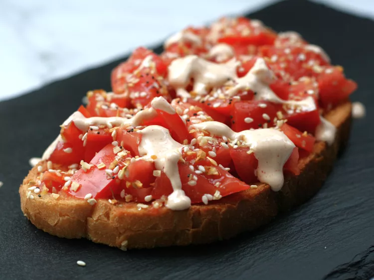

Tomato Toast with Sriracha Mayo

Description
Simple, yet flavorful, this tomato toast with Sriracha mayo makes the perfect lunch, brunch or afternoon snack. Best made with garden-fresh tomatoes or ripe heirloom tomatoes—sometimes I chop the tomatoes, sometimes I slice them. Use crusty bread for best results, as it is sturdy enough to hold the tomato.
Ingredients
- 1 tablespoon Mayo
- 3/4 teaspoon lime juice
- 1/2 teaspoon Sriracha Sauce/li>
- 2 slices bread
- 1 large heirloom tomato, chopped or sliced
- 2 teaspoons everything bagel seasoning, or to taste
Steps
- In a small bowl, mix together mayonnaise, lime juice, and sriracha sauce. Set aside.
- Toast bread in a toaster or toaster oven. Top with tomato, sprinkle with everything bagel seasoning to taste, then drizzle with sriracha mayo.